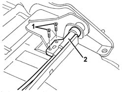

7050A70 lh or rh device with cable (one) of one rear seat squab catch r r
- Path
- Procedures > 70 FITTINGS > 7050 REAR SEATS > 7050A rear seat assembly > 7050A70 lh or rh device with cable (one) of one rear seat squab catch r r
- Kind
- repair procedure (removal / refitting; the operation number is the code)
- Applies to
- all engines; all production periods
- Interactive page
- https://sloeber94.github.io/elrnDB-a156/en/#/3238933
Applies to: all engines; all production periods; only with equipment: Station Wagon and Rear seat with central winder
 Removing
Removing
 Refitting
Refitting7040B28 PET transport PROTECTION and load carrying compartment COVER COMBINATION BLIND - R.R.
7040B10 load platform (luggage platform) trim - r+r
7050A13 SPLIT rear. seat LEFT BACKREST- R.R.
7050A15 SPLIT rear. seat RIGHT BACKREST- R.R.
7050B18 rear seat arm rest - r+r
7050B10 l/h or r/h head restraint (one) of rear seat - r+r
7050B30 rear seat central armest r r
7050A78 ski flap in rear seat squab rr
7050A43 ATTACHMENT/RELEASE DEVICE for one SPLIT rear seat BACKREST. -R.R.
1. Undo the bolts securing the locking pin.
2. Remove the locking pin with cable.

Applies to: all engines; all production periods; only with equipment: Station Wagon and Rear seat with central winder
Refitting
RemovingCheck that the locking pin with cable is not damaged.
Fit the locking pin in position and fix it using the bolts.
7050A43 ATTACHMENT/RELEASE DEVICE for one SPLIT rear seat BACKREST. -R.R.
7050A78 ski flap in rear seat squab rr
7050B30 rear seat central armest r r
7050B10 l/h or r/h head restraint (one) of rear seat - r+r
7050B18 rear seat arm rest - r+r
7050A15 SPLIT rear. seat RIGHT BACKREST- R.R.
7050A13 SPLIT rear. seat LEFT BACKREST- R.R.
7040B10 load platform (luggage platform) trim - r+r
7040B28 PET transport PROTECTION and load carrying compartment COVER COMBINATION BLIND - R.R.
Check that the locking bolt is working properly.
Topics linked from this page (9)
- 7040B10 load platform (luggage platform) trim - r+r
- 7040B28 PET transport PROTECTION and load carrying compartment COVER COMBINATION BLIND - R.R.
- 7050A13 SPLIT rear. seat LEFT BACKREST- R.R.
- 7050A15 SPLIT rear. seat RIGHT BACKREST- R.R.
- 7050A43 ATTACHMENT/RELEASE DEVICE for one SPLIT rear seat BACKREST. -R.R.
- 7050A78 ski flap in rear seat squab rr
- 7050B10 l/h or r/h head restraint (one) of rear seat - r+r
- 7050B18 rear seat arm rest - r+r
- 7050B30 rear seat central armest r r